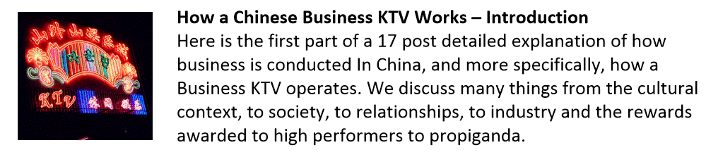
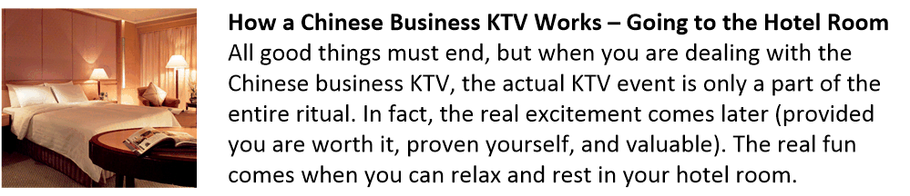
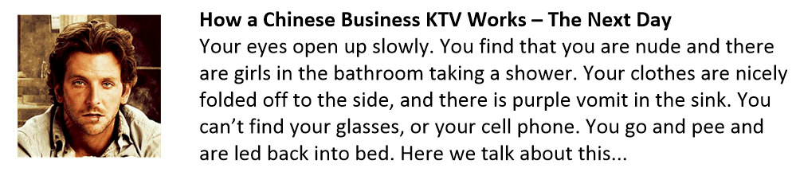

This is part nine of a multi-part post.
The “horrible event” to avoid.
Ah. Another good question. Just why was a “dimensional anchor” required? Why couldn’t humans just “evolve” on their own? Eh?
What was the great horrible event that being a “Dimensional Anchor” was supposed to prevent?
I do not know.
- California sliding into the Pacific ocean?
- Swine Flu?
- Ebola?
- Y2K?
- Trans-gender dominance?
All that I know is that if I (and my colleagues) were unable to suppress the onslaught of discordant sentience manifestation that the future of the human species was in jeopardy.
The human species can evolve into either a “service to self” or a “service to others” sentience. (With “service to another” sentience being a distinct possibility.)
A hybrid or discordant sentience is not permitted.
Characteristics of a discordant sentience are thought manifestations that do not agree with intention.
For instance, “We must silence people so that they can have freedom of speech.”, or “The ability to live happily means the ability to kill easily.” These are discordant statements. We must tax YOU to make others have better lives. Freedom of expression is only fine for XXX not for YYY.
The people making the statements believe actions to justify their thoughts do not need to be in agreement.
As a result, the thoughts generate something different from the intention.
Intention defines the successful implementation of any sentience. For a “service to self” sentience, the thought of making someone give you something because you want it is pure. It is in complete alignment with the sentience.
Likewise, the “service to others” sentience is pure in that if you help others, everyone benefits. It is pure.
While we were able to successfully able to thwart the discordant evolution of our species during the 1980’s, 1990’s and the early 2000’s, I cannot say what is going on after we were retired.
It is possible that the mission continues and the world-line template is being cleansed at this very moment. However, to me it doesn’t look that way. From my point of view, it seems that once we completed our mission, all Hell broke loose and there was an explosion in discordant sentience behaviors.
Who figures, eh?
That can mean numerous things. Any one which could be correct;
- A “service to self” entity took control of MAJestic and is continuing the program in the belief that discordant sentience manifestation will benefit “service to self” objectives.
- No entity is currently performing “Dimensional Anchoring”. The program was a failure and while we were able to temporarily thwart a discordant manifestation, the subsequent events reverted to discordant sentience evolution.
- The MAJestic mission in regards to “Dimensional Anchoring” was successful. However, once I was retired, I was left on a world-line that was in alignment with my deepest desires. I was rewarded. However, this world-line just happens to lie within a discordant sentience evolutionary track. It lies outside the track of the vast majority of people.
Thus, my current world-line provides no indications to it’s success or failure.
The world-line “Template” affects the bulk of the most “popular” world-lines occupied by soul consciousness. I could very well be on an “off shoot” that will terminate within a fixed period of time.
Being terrible – part 2
Ahhh! So many people are so terribly offended. WTF?
You talk so openly about prostitutes and seemingly disparage children that are abused. Don’t you see what a terrible person that you are for doing this?
I am sorry for giving this impression. I write (speak) from my own experiences. This differs from parroting [1] the media narrative, the [2] politically correct narrative, or [3] the popular narrative. This manuscript is about MY experiences. It is not about the experiences of others.
Until I was incarcerated as a sex offender, I never knew any prostitutes or children of abuse. I just didn’t. I was never part of that circle of people.
I only knew about these things from the media. I saw some news programs, and read some articles. However, I never experienced it in my life.
Articles like (the one below) are the reason why there is such uproar about underage sex and trafficking of minors.
“Little Barbies: Sex Trafficking Of Young Girls Is America's Dirty Little Secret” found at https://rutherford.org/publications_resources/john_whiteheads_commentary/little_barbies_sex_trafficking_of_young_girls_is_americas_dirty_little_secr Authored by John Whitehead via The Rutherford Institute. “They’re called the Little Barbies. Children, young girls—some as young as 9 years old—are being bought and sold for sex in America. The average age for a young woman being sold for sex is now 13 years old. This is America’s dirty little secret.”
Look is who is funding and backing this article! Don’t try to tell me that they do not have an agenda.
I am not a fan of George Soros, but there are other organizations that are threatened by his vision. It is not that they want to stop him in so much as they want to replace his role. Read about it here; http://www.discoverthenetworks.org/printgroupProfile.asp?grpid=7309 and https://www.rutherford.org/publications_resources/freedom_watch/the_super_pac_that_aims_to_end_super_pacs https://www.rutherford.org/publications_resources/john_whiteheads_commentary/the_deep_state_the_unelected_shadow_government_is_here_to_stay . All extremes are bad, but what are you going to do?
The closest thing to knowing about these things was from a handful of friends.
I had a few close friends who told me about how they were raped when they were young. I also had my first wife who was raped by a friend of a friend, and never got over it. In fact, many sleepless nights were spent dealing with the baggage that she kept inside over this singular event. It was terrible.
My first ex-wife was my staunchest defender against the charges that I was a sex offender. She was flabbergasted that anyone would even consider me for this role.
So, I do know that unwanted sexual advances and abuse does happen. I know that it hurts people. I know that the damage is ever lasting. I know that there are bad people who do these kinds of things.
After I was incarcerated, I had to attend training to teach me about the abuse of others. I sat in classes with individuals who actually did this kind of abuse. They told me how they would target children, prime and prep them, and then how they would attack them and string them along. It really was pretty horrible. The guys were total creeps and slime of the worst caliber.
I know, mostly because of the onslaught of Hollywood movies that always seemed to have some sort of side story regarding this. From Forrest Gump (his girlfriend Jenny), to The Color Purple. They all had some side story regarding abuse by others, mostly elders. Then, in the 1990’s it went mainstream with “America’s Most Wanted”, and other related television shows.
America's Most Wanted is an American television program that was produced by 20th Television. At the time of its cancellation by the Fox television network in June 2011, it was the longest-running program in the network's history (25 seasons), a mark since surpassed by the long-running animated sitcom, The Simpsons. The show started off as a half-hour program on February 7, 1988. In 1990, the show's format was changed from 30 minutes to 60 minutes. The show's format was reverted to 30 minutes in 1995, and then, to 60 minutes in 1996. A short-lived syndicated spinoff titled America's Most Wanted: Final Justice aired from 1995 to 1996.
In short, I have only heard about these things second-hand. I never experienced them personally.
I think that this is true for the reader as well. Have you personally experienced these kinds of things, or know of someone who had? Probably, what you know comes from what you saw on television, the Internet or the media. Right?
That is third-hand.
You heard from a reporter who is interviewing or reporting on something that someone said. That is third-hand.
My first experience with a prostitute (non-sexual) came when I was forced to live in the mist of them while on parole. There was a house on our left that had between 4 and 6 prostitutes, and one old black man who sold crack. On the right was another house that had three girls, but the girls didn’t hang out. They would get in cars that drove up to get them and then return. Across the street were two houses with some enormously fat and hyper ugly gals. They were quite busy, I’ll tell you what.
I got to know them, at least the American version.
They weren’t bad. Not at all. In fact, they were all pretty nice. (Not pretty, though. Yuck!)
All of them, of the ones that I met, were doing so of their own accord. They were free to come and go as they chose. They had financial obligations, mostly young children, and prostitution was a way for them to make money quickly. Many of them (I think, and suspect) had issues with drugs, but certainly not all of them.
Now, I was retired under this excuse that I was a sex offender. Yet, at the time I was arrested, I was never with a prostitute. I never met anyone who would fit the description of a sex abused child (aside from my friends who were raped on dates). When I started to meet the people “in the trade”, I realize that the vast bulk of the girls involved in sex for money were their own bosses and doing so for their own reasons. No one was forcing them. Those people who were paying them; the “Johns”, weren’t harming them. They were just exchanging services for money. So, I do know that there are terribly abused children out there. I do know that there are people who are tricked and manipulated. I do know that it exists. I do read the media. As such, I am glad that there are efforts to find the sexual predators and imprison them.
These prostitutes all got along with my cat Coco. She was just “one of the girl’s”. Coco would go next door and hang out with the girls on the porch. She was very comfortable with them.
Then, when I moved to Asia, I got to meet the girls who would trade sex for money.
These girls did so for their own purposes as well. Mostly it was to have fun, attend to family responsibilities, or to meet wealthy or prosperous men in the hope of maybe having a long term relationship.
Not every sexual encounter is “just a job”. It is like any work assignment. There are good days and bad days. There are days that you absolutely hate, and days that are actually pretty good.
This was a far different motivation than their American counterparts.
Many of the attractive girls in China used the KTV medium as a way to meet successful men while having a great time. They made “good money”, and spent it on things that matter most to girls in their mid-20’s; latest fashions, expensive babbles, cell phones, and traveling to interesting places.
The older prostitutes (30’s and 40’s) would spend the money on their family; their children and their parents.
I just never met any prostitutes older than that.
Of the girls that I met working “the trade”, they were all (for lack of a better word) business-women. Some were doing so on a temporary basis to achieve some goal. Some were more experienced and were working on some pretty big projects; like buying a SPA, purchasing a McDonalds franchise, or exporting furs to Hong Kong.
They were not some chained up, or passed-around, waif.
They were very practical and pragmatic and were out for themselves to get what they wanted. Indeed, some were quite mercenary about it and today are very successful.
One gal (I know) owns multiple houses, businesses, and is quite wealthy. She drank a lot, but had her shit together. Now she is very powerful within her reality. She drives a Bentley that she paid for in cash. She owns numerous mansions, and multiple businesses.
Seriously, I tell the reader the truth, if you were to meet some of the girls who now work as “pimps” or managers for these girls; you would be stunned into silence.
These gals would eat you up raw, and spit you out before you even knew what happened. Smart, aggressive, attractive, worldly and powerful. You, the reader, cannot possibly understand how these “graduated” women are. Think of General (Mad Dog) Mattis in the body of an Asian version of Eva Mendes or Angelina Jolie.
All of the girls that I know of that trade sex for money do so of their own volition. And they all tend to be very excellent businesswomen.
In fact, the reader might be surprised that a large number of them do so as a side business while they are attending university. After all, where will they get the money for their Starbuck’s lattes and latest iPhone?
Their parents? (Maybe for some of them. When I was in college, I was lucky to have money for a bagel and butter.)
Yet these girls have expensive purses, phones, and all sorts of high end clothes. How do you think they got the money? These ladies are not some misguided or confused, manipulated person trapped in a world beyond their control. They use the skills, abilities, and resources at their disposal to obtain advantage, money and power. The media narrative that is not part of the reality that I have been exposed to.
It is not that I heard about these girls on TV, or on the radio, or that I read a story on the Internet, or Alex Jones talked about it. I actually know these people. I know what they do, and I understand their motivation. As such, I get rather upset when some “know it all” tries to tell me that all girls are abused. That working as a prostitute is a “last resort” and only a girl can be forced to have sex for money. That it is common knowledge that most “normal” girls would never do such a thing. Nonsense. It is nothing of the sort.
I have been “around the block” enough to know that NO woman is a weakling. You might not like what she is doing, or how she does it, but you can pretty much recognize that she is doing what SHE wants to do on HER terms.
Yes, there is child abuse and there are sexual deviants.
However, the actual percentage of this most terrible situation occurring near me is actually pretty low. As far as I am concerned, I’ve never seen it. It’s not part of my reality.
So, it might be very difficult to hear, and very non-politically correct, but when I speak of girls and prostitutes I do so from the point of understanding from experience.
This is direct first-person experience. Unless you, the reader, know personal first-hand regarding these girls and women, don’t try to disparage my experiences.
This is the real deal. Forget about all that nonsense that you find in the British tabloids and an occasional write up in the American liberal press. This is the reality. Read or not.



Turn off the manipulative media, and experience life first hand. What I do know is that the media sensationalizes things to achieve political results. Most of what they write about is nonsense. That includes all of the vices, and anything that is designed to evoke an emotional reaction.
Human Souls
To understand ourselves we need to understand what comprises us.
You talk a lot about souls. But nothing that you mention is found in any of the great books on the subject, the Bible or espoused by any of the great thinkers of our times. Isn’t it a bit presumptive of you to spout off without consulting with the learned spiritual leaders of our day?
No.
I am just reporting what I know through entanglement with an artifice.
I do not know if it is correct or not.
I am only reporting on it. I have added my comments from my experiences and from the point of view of my own understandings. The reader is free to believe what they choose to believe.
In short…
- A soul is a construction of ordered quanta that has obtained sentience.
- Souls are not homogenized. They are a collection of parts. These parts are called “garbons”.
- Garbons communicate and interface with other garbons via “routes”. These routes are called “Swales”.
- A soul is capable of storing memories.
- A soul is capable of generating world-lines from a template.
- A soul can then create a consciousness and place it within a world-line reality.
Probe operation under the effects of alcohol
Interesting question.
Now that you are retired, and you obviously drink and indulge in various vices, how are your probes affected?
They are not affected at all.
Going to Hell
Aren’t you afraid that you will go to Hell because of your less-than-perfect behaviors?
No.
I am extremely confident that I will not go to Hell.
Tune ups
Have you ever needed a “tune up” on any of your probes?
No.
Probe Problems
Do you ever have problems with your implants?
No.
Not really. However, once I kept a power outlet strip on the back on one of my living room chairs. I had plugged in various transformers for my laptops, and smart phones into it.
When I sat on the chair to type on my computer, I began to feel odd and out of sorts. I have since attributed it to an electromagnetic field that surrounds the unshielded transformers.
It’s nothing to be concerned about; however it is an uncomfortable feeling.
I once started to have headaches. They started to get really bad and so I went to a hospital and had an MRI. The doctor was completely surprised by all the stuff in my skull. He asked me if “someone shot at me with a BB gun when I was a little child”. But, no. What ever was going on (stress from work), taking the initiative and going to the hospital somehow managed to dissipate the stress. I don’t think it has anything to do with either the EBP or the ELF probes.
Contradictory statements
Parsing. Trying to find flaws to disparage. It’s a common, time-honored technique.
Throughout your blog you make statements and then contradict yourself. Sometimes, I feel like a ping-pong ball because you go back and forth so much. Regarding the number of other agents like yourself, how many were in MAJestic?
I do not know.
I only know that myself and Sebastian were in the same role. (I assume that the base commander was not an agent in the same role that we were in. Though, it is reasonable to assume that he was in MAJestic. I think that that is a reasonable assumption.)
During the “sales pitch” he told us that the membership would be limited to a handful of specially selected people, and that we were the first.
I have no idea how much is a “handful”. I have always thought that it could mean five to six (five fingers) or twelve (one dozen).
However, through entanglement, I could sense what the drone (biological artifice) saw.
According to what I could “see” it looked like the number was much larger. Maybe approaching somewhere between 60 and one hundred artifice drones. (This was most certainly not a “handful”.)
Initially, this gave me an impression that there were many such individuals all like Sebastian and myself.
All of these drones seemed to be involved in different kinds of activities. Activities that all seemed to come and go, but all were involved in tasks that neither Sebastian nor I were involved in. In fact, our tasks were mostly related to <redacted> the drone. With some minor activities related to <redacted> the various facilities.
The other (unaccounted for) drones seemed to have more “work related” roles, such as moving things, manipulating things, and doing things.
Our drones just seemed to “exist”.
They were different in activity, though not in appearance. Later, I have come to the conclusion that they were NOT like us, though they used the same general “equipment”.
After all, they were biological artifices.
This makes sense because the “squawk” between all these other drones was absent.
I could “listen in” on <redacted> responses (if I was privileged to) from other drone commanders like myself. Yet, that number was far less than my assumptive tabulation. When the program first started I was under the impression of maybe six to seven other drone pilots, but it became clear in the middle 1990’s that the number was only around five others. So, after much deliberation, I have come to my unproven (but reasoned) conclusion that there might have been as many as four teams of two-man cells (minus a leader).
So again, the answer is “I do not know the number of other MAJestic agents in the same role as myself”, however I reason that it might be as high as eight individuals.
The only conclusion that I can come to is that the artifices are a standard item that is involved in many things. I, and a small number of others, were involved in world-line anchoring.
At that, let’s call it quits. I hope your enjoyed this post.
If you want to go to the start of this series of posts, then please click HERE.
MAJestic Related Posts – Training
These are posts and articles that revolve around how I was recruited for MAJestic and my training. Also discussed is the nature of secret programs. I really do not know why the organization was kept so secret. It really wasn’t because of any kind of military concern, and the technologies were way too involved for any kind of information transfer. The only conclusion that I can come to is that we were obligated to maintain secrecy at the behalf of our extraterrestrial benefactors.


MAJestic Related Posts – Our Universe
These particular posts are concerned about the universe that we are all part of. Being entangled as I was, and involved in the crazy things that I was, I was given some insight. This insight wasn’t anything super special. Rather it offered me perception along with advantage. Here, I try to impart some of that knowledge through discussion.
Enjoy.


Influencer Questions
Here are posts that have gathered a series of questions from various influencers. They are interesting in many ways and could help all of us unravel the mysteries of the lives that we live.

MAJestic Related Posts – World-Line Travel
These posts are related to “reality slides”. Other more common terms are “world-line travel”, or the MWI. What people fail to grasp is that when a person has the ability to slide into a different reality (pass into a different world-line), they are able to “touch” Heaven to some extent. Here are posts that cover this topic.


John Titor Related Posts
Another person, collectively known by the identity of “John Titor” claimed to utilize world-line (MWI egress) travel to collect artifacts from the past. He is an interesting subject to discuss. Here we have multiple posts in this regard.
They are;